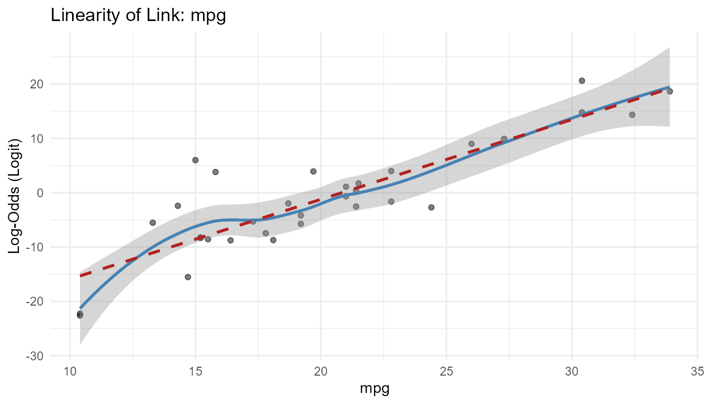
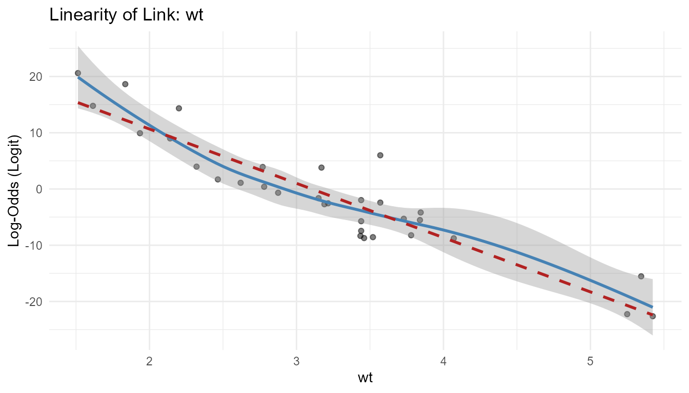
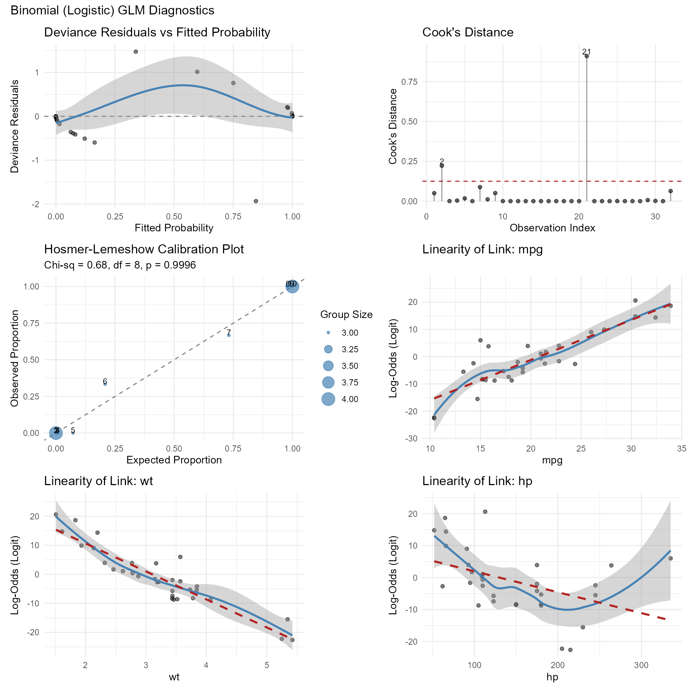
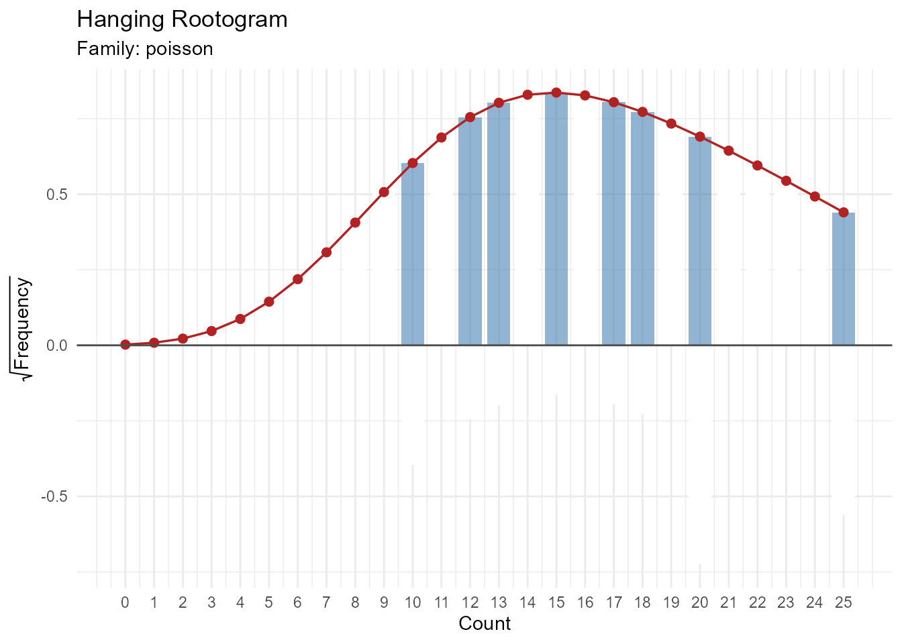
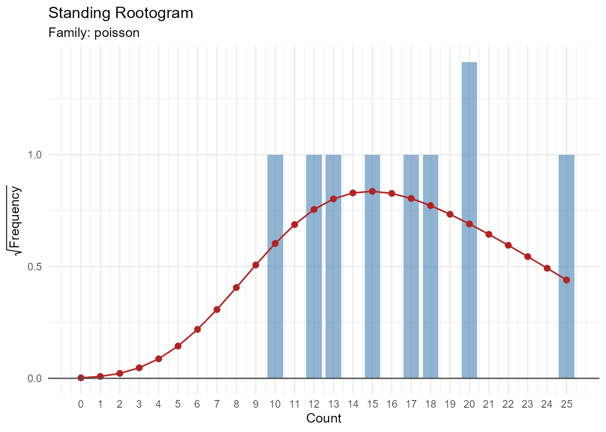
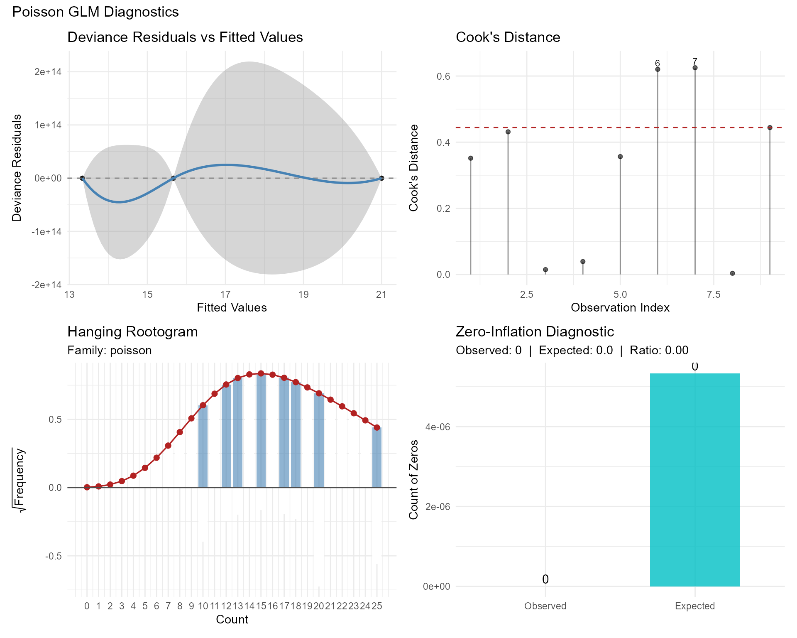
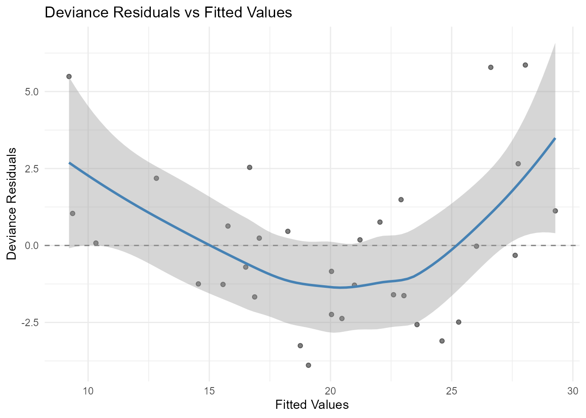
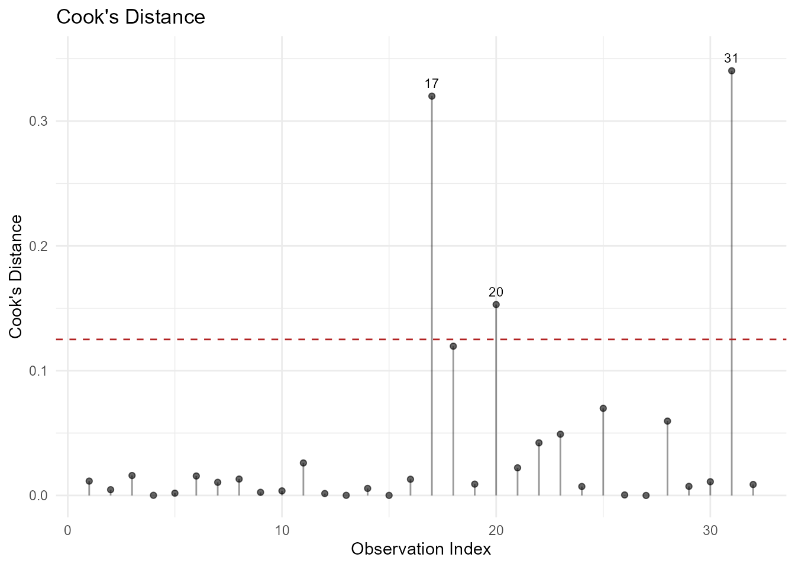
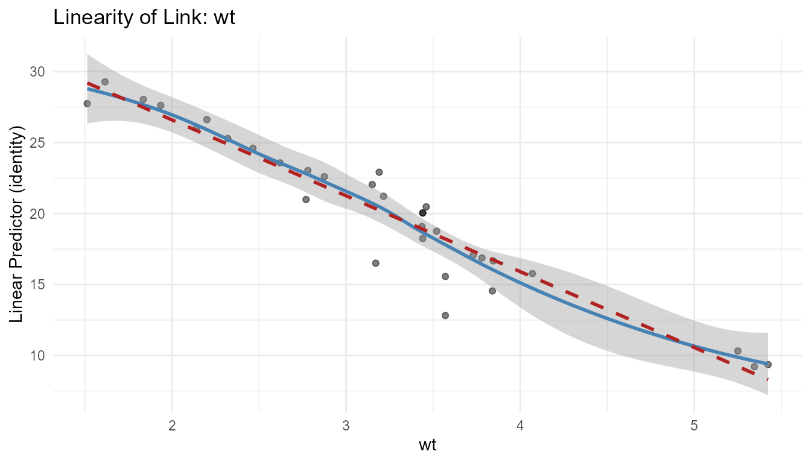
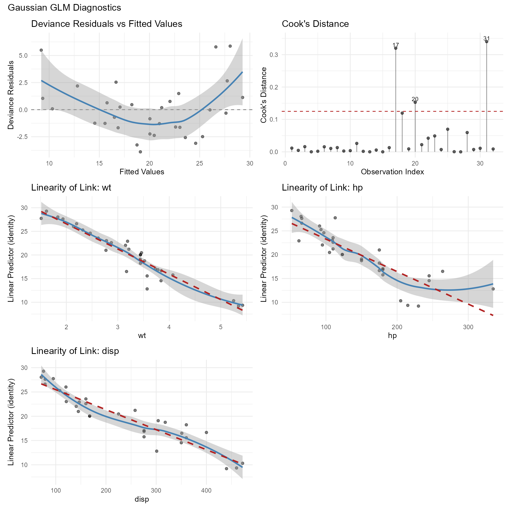

Diagnosing GLMs with glmassume
Source:vignettes/glmassume-walkthrough.Rmd
glmassume-walkthrough.RmdOverview
The glmassume package provides visual and statistical
diagnostics for generalized linear models (GLMs). It supports all common
GLM families: binomial, Poisson, negative binomial, Gamma, inverse
Gaussian, and Gaussian.
This vignette demonstrates diagnostics for three families:
- Binomial (logistic regression)
- Poisson (count data)
- Gaussian (linear regression via GLM)
The diagnostics implemented here follow frameworks presented in:
Hosmer, D.W., Lemeshow, S., and Sturdivant, R.X. (2013). Applied Logistic Regression, 3rd Edition. John Wiley & Sons. Chapters 4–5.
Kleiber, C. and Zeileis, A. (2016). Visualizing Count Data Regressions Using Rootograms. The American Statistician, 70(3), 296–303.
Part 1: Binomial (Logistic Regression)
We’ll use the mtcars dataset and model the probability
that a car has a manual transmission (am = 1) based on
miles per gallon (mpg), weight (wt), and
horsepower (hp).
model_binom <- glm(am ~ mpg + wt + hp, data = mtcars, family = binomial)
summary(model_binom)
#>
#> Call:
#> glm(formula = am ~ mpg + wt + hp, family = binomial, data = mtcars)
#>
#> Coefficients:
#> Estimate Std. Error z value Pr(>|z|)
#> (Intercept) -15.72137 40.00281 -0.393 0.6943
#> mpg 1.22930 1.58109 0.778 0.4369
#> wt -6.95492 3.35297 -2.074 0.0381 *
#> hp 0.08389 0.08228 1.020 0.3079
#> ---
#> Signif. codes: 0 '***' 0.001 '**' 0.01 '*' 0.05 '.' 0.1 ' ' 1
#>
#> (Dispersion parameter for binomial family taken to be 1)
#>
#> Null deviance: 43.2297 on 31 degrees of freedom
#> Residual deviance: 8.7661 on 28 degrees of freedom
#> AIC: 16.766
#>
#> Number of Fisher Scoring iterations: 10Linearity of the Link
A key assumption of logistic regression is that each continuous
predictor has a linear relationship with the log-odds (logit) of the
outcome. The plot_linearity_link() function overlays a
loess smoother (blue) and a linear fit (red dashed) on each predictor
vs. the predicted link value.
linearity_plots <- plot_linearity_link(model_binom)
linearity_plots[["mpg"]]
linearity_plots[["wt"]]
What to look for: The blue loess curve should track closely with the red dashed line. Curvature or systematic departures suggest you may need a transformation (e.g., polynomial or spline term) for that predictor.
Hosmer-Lemeshow Goodness-of-Fit Test
The Hosmer-Lemeshow test is specifically designed for binomial models.
hl <- hoslem_test(model_binom)
hl
#> Hosmer-Lemeshow Goodness-of-Fit Test
#> ------------------------------------
#> Groups: 10
#> Chi-sq: 0.6781 df: 8 p-value: 0.9996
#>
#> group n observed_1 expected_1 observed_0 expected_0
#> 1 4 0 0.0001560190 4 3.999844e+00
#> 2 3 0 0.0005911782 3 2.999409e+00
#> 3 3 0 0.0041047307 3 2.995895e+00
#> 4 3 0 0.0240418883 3 2.975958e+00
#> 5 3 0 0.2168488934 3 2.783151e+00
#> 6 3 1 0.6230661874 2 2.376934e+00
#> 7 3 2 2.1937543827 1 8.062456e-01
#> 8 3 3 2.9401004512 0 5.989955e-02
#> 9 3 3 2.9973372490 0 2.662751e-03
#> 10 4 4 3.9999990202 0 9.798401e-07
plot_hoslem(model_binom)

All-in-One Diagnostic Panel
if (requireNamespace("patchwork", quietly = TRUE)) {
diagnose_glm(model_binom)
}
Part 2: Poisson Regression
For count data, we use a Poisson model. The key additional concerns are overdispersion and zero inflation.
counts <- c(18, 17, 15, 20, 10, 20, 25, 13, 12)
outcome <- gl(3, 1, 9)
treatment <- gl(3, 3)
model_pois <- glm(counts ~ outcome + treatment, family = poisson)
summary(model_pois)
#>
#> Call:
#> glm(formula = counts ~ outcome + treatment, family = poisson)
#>
#> Coefficients:
#> Estimate Std. Error z value Pr(>|z|)
#> (Intercept) 3.045e+00 1.709e-01 17.815 <2e-16 ***
#> outcome2 -4.543e-01 2.022e-01 -2.247 0.0246 *
#> outcome3 -2.930e-01 1.927e-01 -1.520 0.1285
#> treatment2 1.217e-15 2.000e-01 0.000 1.0000
#> treatment3 8.438e-16 2.000e-01 0.000 1.0000
#> ---
#> Signif. codes: 0 '***' 0.001 '**' 0.01 '*' 0.05 '.' 0.1 ' ' 1
#>
#> (Dispersion parameter for poisson family taken to be 1)
#>
#> Null deviance: 10.5814 on 8 degrees of freedom
#> Residual deviance: 5.1291 on 4 degrees of freedom
#> AIC: 56.761
#>
#> Number of Fisher Scoring iterations: 4Overdispersion Test
overdispersion_test(model_pois)
#> Overdispersion Test (Pearson Chi-Squared)
#> ------------------------------------------
#> Family: poisson
#> Dispersion estimate: 1.2933
#> Pearson Chi-sq: 5.1732 df: 4 p-value: 0.2700
#> => Evidence of overdispersion (dispersion > 1)Dispersion Diagnostic
dispersion_test(model_pois)
#> Dispersion Diagnostic
#> ---------------------
#> Family: poisson
#> Estimated dispersion: 1.2933
#> Residual df: 4
#> Pearson Chi-sq: 5.1732 p-value: 0.2700
#> => Dispersion > 1 (potential overdispersion)Rootogram
A rootogram compares observed and expected frequencies on a square-root scale. In a “hanging” rootogram, bars that dip below the axis indicate the model under-predicts those counts.
plot_rootogram(model_pois)
plot_rootogram(model_pois, style = "standing")
All-in-One Panel (Poisson)
if (requireNamespace("patchwork", quietly = TRUE)) {
diagnose_glm(model_pois)
}
Part 3: Gaussian GLM
The same diagnostics work for Gaussian (identity link) models.
model_gauss <- glm(mpg ~ wt + hp + disp, data = mtcars, family = gaussian)
summary(model_gauss)
#>
#> Call:
#> glm(formula = mpg ~ wt + hp + disp, family = gaussian, data = mtcars)
#>
#> Coefficients:
#> Estimate Std. Error t value Pr(>|t|)
#> (Intercept) 37.105505 2.110815 17.579 < 2e-16 ***
#> wt -3.800891 1.066191 -3.565 0.00133 **
#> hp -0.031157 0.011436 -2.724 0.01097 *
#> disp -0.000937 0.010350 -0.091 0.92851
#> ---
#> Signif. codes: 0 '***' 0.001 '**' 0.01 '*' 0.05 '.' 0.1 ' ' 1
#>
#> (Dispersion parameter for gaussian family taken to be 6.963953)
#>
#> Null deviance: 1126.05 on 31 degrees of freedom
#> Residual deviance: 194.99 on 28 degrees of freedom
#> AIC: 158.64
#>
#> Number of Fisher Scoring iterations: 2Residuals and Influence
plot_residuals(model_gauss)
plot_influence(model_gauss, type = "cooks")
Linearity of the Link
For a Gaussian GLM with identity link, this checks that predictors have a linear relationship with the response.
link_plots <- plot_linearity_link(model_gauss)
link_plots[["wt"]]
Dispersion Diagnostic
For Gaussian models, dispersion is estimated (not fixed), so no hypothesis test is performed.
dispersion_test(model_gauss)
#> Dispersion Diagnostic
#> ---------------------
#> Family: gaussian
#> Estimated dispersion: 6.9640
#> Residual df: 28
#> (Dispersion is estimated, not fixed; no hypothesis test performed)All-in-One Panel (Gaussian)
if (requireNamespace("patchwork", quietly = TRUE)) {
diagnose_glm(model_gauss)
}
Summary
| Diagnostic | Function | Families |
|---|---|---|
| Linearity of link | plot_linearity_link() |
All |
| Residual patterns | plot_residuals() |
All |
| Influential observations | plot_influence() |
All |
| Multicollinearity | plot_vif() |
All |
| Calibration |
hoslem_test() /
plot_hoslem()
|
Binomial |
| Overdispersion | overdispersion_test() |
All (most useful for Poisson/NB) |
| Dispersion | dispersion_test() |
All |
| Rootogram | plot_rootogram() |
Poisson / NB |
| Zero inflation | plot_zero_inflation() |
Poisson / NB |
| All-in-one panel | diagnose_glm() |
All (auto-detects family) |
References
- Belsley, D.A., Kuh, E., and Welsch, R.E. (1980). Regression Diagnostics: Identifying Influential Data and Sources of Collinearity. John Wiley & Sons.
- Box, G.E.P. and Tidwell, P.W. (1962). Transformation of the independent variables. Technometrics, 4(4), 531–550.
- Cook, R.D. (1977). Detection of influential observation in linear regression. Technometrics, 19(1), 15–18.
- Hoaglin, D.C. and Welsch, R.E. (1978). The hat matrix in regression and ANOVA. The American Statistician, 32(1), 17–22.
- Hosmer, D.W. and Lemeshow, S. (1980). Goodness of fit tests for the multiple logistic regression model. Communications in Statistics – Theory and Methods, 9(10), 1043–1069.
- Hosmer, D.W. and Sturdivant, R.X. (2007). A smoothed residual based goodness-of-fit statistic for logistic hierarchical regression models. Computational Statistics & Data Analysis, 51(8), 3898–3912.
- Hosmer, D.W., Lemeshow, S., and Sturdivant, R.X. (2013). Applied Logistic Regression, 3rd Edition. John Wiley & Sons.
- Kleiber, C. and Zeileis, A. (2016). Visualizing Count Data Regressions Using Rootograms. The American Statistician, 70(3), 296–303.
- Marquardt, D.W. (1970). Generalized inverses, ridge regression, biased linear estimation, and nonlinear estimation. Technometrics, 12(3), 591–612.
- McCullagh, P. and Nelder, J.A. (1989). Generalized Linear Models, 2nd Edition. Chapman & Hall.
- Ozkale, M.R., Lemeshow, S., and Sturdivant, R. (2018). Logistic regression diagnostics in ridge regression. Computational Statistics, 33, 563–593.
- Paul, P., Pennell, M.L., and Lemeshow, S. (2013). Standardizing the power of the Hosmer-Lemeshow goodness of fit test in large data sets. Statistics in Medicine, 32(1), 67–80.
- Pregibon, D. (1981). Logistic regression diagnostics. The Annals of Statistics, 9(4), 705–724.